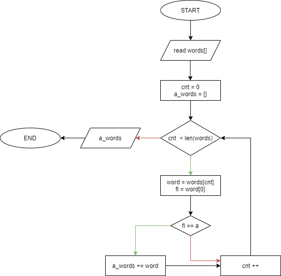

Esercizi per l'esame scritto¶
Questi sono esempi degli esercizi la cui risoluzione potrebbe essere richiesta durante un appello.
Parte teorica
Si sottolinea che questi esercizi non sono rappresentativi delle domande (a risposta aperta) che verranno poste all'appello; queste ultime, infatti, riguarderanno gli aspetti prettamente teorici del corso.
Esercizi ed appelli
Questi esercizi sono simili, come difficoltà ed impostazione, a quelli che saranno proposti durante un appello; ciò implica che, ovviamente, gli esercizi da risolvere non saranno mai scelti tra questi.
Esercizio 1¶
Definire una funzione che accetti come parametro in ingresso due interi \(a\) e \(b\) e stampi a schermo in uscita un valore reale, in cui la parte intera è pari ad \(a\), e la parte decimale è composta dalle stesse cifre di \(b\). Si tronchi la parte decimale alla seconda cifra dopo la virgola.
Ad esempio:
\(a = 8; b = 107; \Rightarrow res = 8.10\)
E' possibile utilizzare C/C++ o Python.
Suggerimento
Per stampare a schermo soltanto le prime due cifre decimali, si utilizzi il format specifier %.2f in C/C++, e :.2f in Python.
Risoluzione¶
void funzione(int a, int b) {
float c = (float) a;
float d = (float) b;
while (d > 1.0) { // Divido il valore di b fino a che la parte intera non è minore di 1.
d = d / 10;
}
c += d; // Aggiungo c (parte reale) a d (parte decimale)
printf("%.2f", c); // Stampo a schermo il risultato.
}
python
def funzione(a: int, b: int):
while b > 1.0:
b = b / 10
a += b
print("{:.2f}".format(a))
Esercizio 2¶
Descrivere l'output delle seguenti funzioni Python.
# Funzione A
def funzione_a(s: str) -> str:
print('La stringa passata in ingresso è {}\n'.format(s))
s[0] = 'A'
print('La stringa modificata è {}\n'.format(s))
return s
# Funzione B
def funzione_b(s: str) -> str:
print('La stringa passata in ingresso è {}\n'.format(s))
s = 'A'
print('La stringa modificata è {}\n'.format(s))
return s
Risoluzione¶
La funzione A stamperà a schermo la stringa passata in ingresso, per poi restituire un errore, in quanto una stringa non è mutabile in Python, dunque l'istruzione s[0] = 'A' non è valida.
La funzione B stamperò a schermo la stringa passata in ingresso, per poi stampare a schermo il nuovo valore assunto dalla stringa come variabile locale (ovvero A). Nonostante questo, la stringa originaria non sarà modificata, a meno che non si usi la seguente sintassi:
>>> s = 'stringa'
>>> s = funzione_b(s)
Questo è legato al fatto che Python gestisce il passaggio dei parametri per valore e non per reference.
Esercizio 3¶
Definire una funzione C++ che aggiunga un elemento ad un vettore passato come argomento alla stessa. Si usi il container vector ed un iteratore.
Risoluzione¶
void append(vector<int> &v, int el) {
v.insert(v.end(), el);
}
La funzione append() accetta un container di tipo vector, contenente a sua volta valori interi, ed un intero. Viene quindi usato un iteratore che punta al termine del container (v.end()), in abbinata al metodo insert, per aggiungere l'elemento in coda al vettore. Si noti come il passaggio avvenga per reference, e non per valore, in modo da non dover usare alcuna istruzione return; la sintassi alternativa (con istruzione return) sarebbe stata:
vector<int> append_v(vector<int> v, int el) {
v.insert(v.end(), el);
return v;
}
// Esempio di funzionamento
int main ()
{
vector<int> v = { 1 };
append(v, 4);
for (vector<int>::iterator it = v.begin(); it != v.end(); ++it) {
cout << *it << endl;
}
}
Esercizio 4 (dal Quesito n.ro 2 dell'appello del 25/01/2021)¶
Si scriva (inoltre) un esempio di funzione per ciascuna delle due tipologie di istruzione.
Risoluzione¶
Si può consultare una possibile risoluzione a questo link.
Esercizio 5 (dal Quesito n.ro 2 dell'appello del 09/02/2021)¶
Si utilizzi lo strumento descrittivo dei diagrammi di flusso per rappresentare la selezione di tutte le parole che iniziano con la lettera A dalle seguenti: Abaco, Geometria, Matematica, Aritmetica, Trigonometria.
Risoluzione¶
Una possibile risoluzione è mostrata nel seguente diagramma di flusso.

I passi sono i seguenti:
- legge la lista di parole in ingresso, e salvala in una variabile chiamata
words; - crea un contatore
cnted una listaa_words(vuota) che conterrà le parole che iniziano con la lettera a; - fino a che
cnt < len(words):
a. seleziona la parola attuale (word);
b. se la prima lettera è a, allora aggiungiwordada_words;
c. incrementa il contatorecnt; - restituisci in output
a_words.